| Diameter | Size | Graphs |
|---|---|---|
| 1 | 2 | 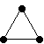 |
| 2 | 4 | |
| 3 | 14 | 
|
| 4 | n | 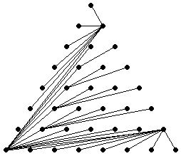 (Jeremy Galvagni) |
Problem #1: A straight line planar graph is a graph with non-intersecting straight lines as edges. The diameter of a graph is the longest distance between a pair of vertices in the graph. What is the smallest diameter of a straight line planar graph with vertices in an m×n rectangle? Can you find a 13×13 graph with diameter 4? What are the minimal diameters for other rectangular graphs? What about triangular graphs?
Problem #2: Given a set of lengths (possibly repeated), what is the smallest straight line planar graph where every vertex is incident to edges of exactly those lengths?
Problem #3: A degree-distance graph is a graph where the degree of every vertex is equal to the number of vertices in the graph that are maximally distant from it. What are the small degree-distance graphs? For what sets do distance-degree graphs exist?
Problem #4: A vertex v2 is called the antipode of vertex v1 if v2 is the unique farthest vertex from v1. An antipode chain {v1, v2, . . . vn} is a list of vertices where vi+1 is the antipode of vi. What is the smallest graph with an antipode chain of length n? Do such graphs exist for every n?
This problem ended up being too easy. Jeremy Galvagni showed that any rectangular or triangular graph can have diameter no larger than 4.
Joseph DeVincentis found the size 4 triangular graph with diameter 2, and a size 13 triangular graph with diameter 3.
Joseph Cooper found a 13×13 graph with diameter 4.
| Diameter | Size | Graph |
|---|---|---|
| 1 | 1×2 | |
| 2 | 3×3 | |
| 3 | 5×n | 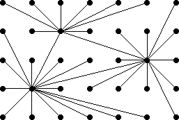 |
| 4 | m×n | 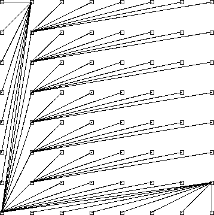 (Jeremy Galvagni) |
| Diameter | Size | Graphs |
|---|---|---|
| 1 | 2 | 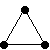 |
| 2 | 4 | |
| 3 | 14 |
|
| 4 | n | 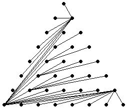 (Jeremy Galvagni) |
Joseph DeVincentis found the minimal {a,a,b} graphs for b<2a.
Joseph DeVincentis also noted that the solutions for {1}, {1,1}, {1,1,1}, and {1,1,1,1} can be found in the Math Magic two months ago.
| Incidence Set | Graph |
|---|---|
| {a} | |
| {a,a} | 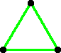 |
| {a,b} | 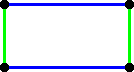 |
| {a,a,a} | 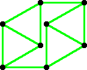 |
| {a,a,b} b < 2a | 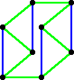 |
| {a,a,b} b ≥ 2a | 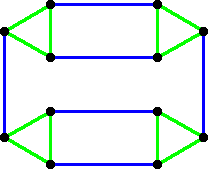 (Gavin Theobald) |
| {a,b,c} a+b > c | 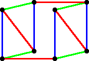 |
| {a,b,c} a+b ≤ c a << b | 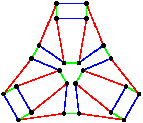 |
| {a,b,c} 2ac < a2+b2 < 2bc | 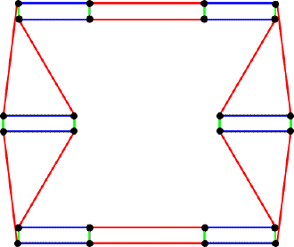 (Gavin Theobald) |
| {a,a,a,b} b = √3 a | 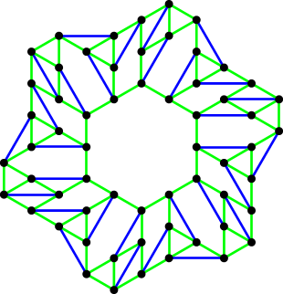 (Gavin Theobald) |
| {a,a,b,b} b = 1.985 a | 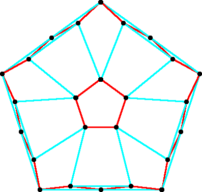 |
| {a,a,b,b} b = 1.358 a | 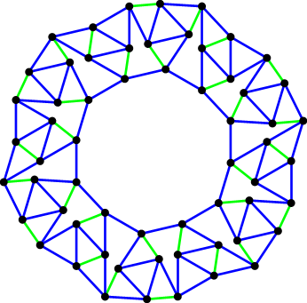 (Gavin Theobald) |
Joseph DeVincentis noted that the complete graph Kn+1 is a {n} degree-distance graph, and that by joining two copies of Kn+1 at a vertex, we get a {n, 2n} degree-distance graph.
Joseph DeVincentis also proved that {1} and {1,2} are the only sets possible that contain 1, and that {n,n+1} degree-distance graphs always exist.
| Degree Set | Graphs |
|---|---|
| {1} | |
| {2} | 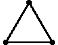 . . . |
| {3} | 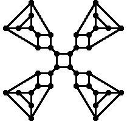 |
| {4} | . . . |
| {1,2} | |
| {2,3} | |
| {2,4} | . . . |
| {2,5} | 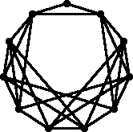 |
| {3,4} | |
| {3,6} | |
| {3,7} | ? |
| {4,5} | (Joe DeVincentis) |
| {4,6} | 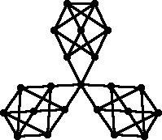 |
| {4,7} | ? |
| {4,8} |  . . . . . .
|
Corey Plover found antipode chains for n≥5, using 2n – 5 + (n+1)/2 (n+5)/2 vertices.
| Length | Graph |
|---|---|
| 2 | 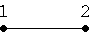 |
| 3 | 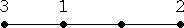 |
| 4 | 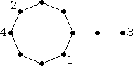 |
| 5 | 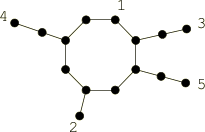 (Gavin Theobald) |
| 6 | 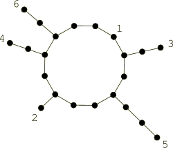 (Gavin Theobald) |
| 7 | 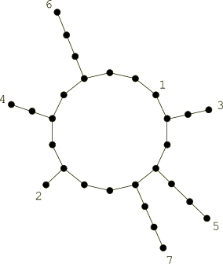 (Gavin Theobald) |
| 8 | 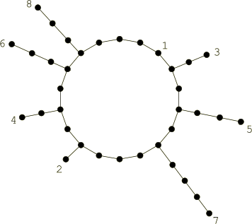 (Gavin Theobald) |
If you can extend any of these results, please
e-mail me.
Click here to go back to Math Magic. Last updated 2/14/06.